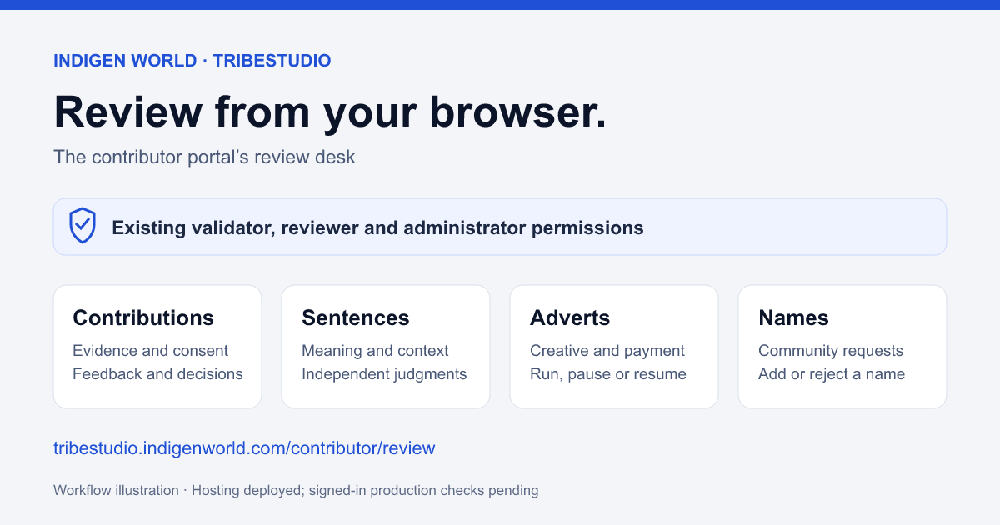

Validators can use the contributor portal to review community work from a browser. The new Review desk brings contributions, sentences, adverts and name requests together at tribestudio.indigenworld.com/contributor/review.
Availability: the web update was deployed on September 30, 2026. The live page and its files match the verified release build. Signed-in production checks are still pending.

For contributions, open an item to read its source, meanings, examples and recorded permissions. Play an attached recording or video before deciding. Approve it, give a reason for rejection, ask for changes where the contribution supports corrections, or escalate it for another look. Publication is a separate action available for approved work with publication permission.
Search an existing dictionary spelling to compare meanings before reviewing a new word. Newer choices for routing an answer to a regional variant, expression, example sentence, translation pair or private training material remain hidden until their backend release is verified.
Sentence reviews keep separate judgments for meaning, grammar, naturalness and context. Reviewers confirm that they can judge the dialect and can hear a permitted speaker recording. Confirmation depends on independent reviews and permission; one review does not guarantee publication. Legacy notes may need migration and permission before the server accepts a review.
For adverts, check the creative, destination, audience, duration, budget and payment status. Reviewers can approve an eligible paid advert to run, reject it with feedback, pause it or resume it. Name requests have their own add-or-reject decision.
The link is shown only to accounts with existing validator, reviewer or administrator permission. A direct link checks permission too. Review access does not require a separate contributor invitation, and ordinary contributor accounts cannot open the desk.
Each queue shows up to 60 matching items. Missing attachments, expired permission and unavailable backend workflows are reported rather than treated as successful reviews. Existing server checks still decide whether an action is allowed.